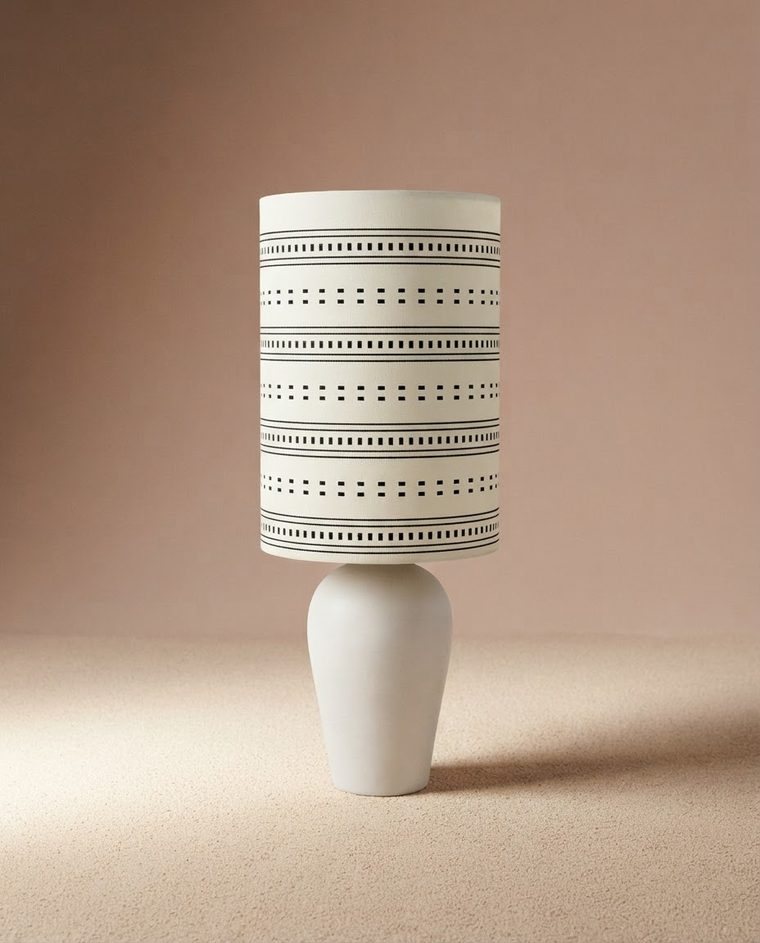
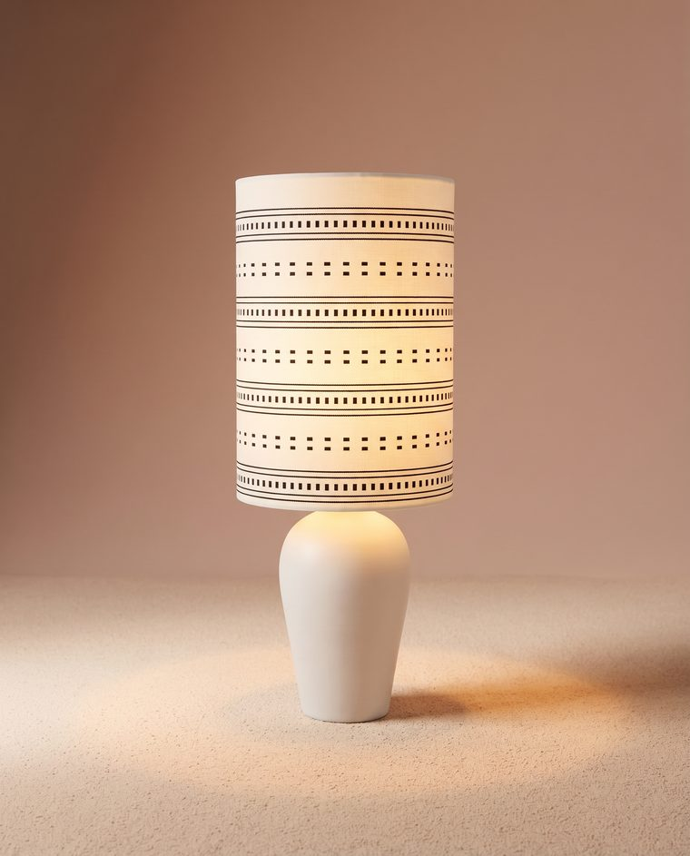
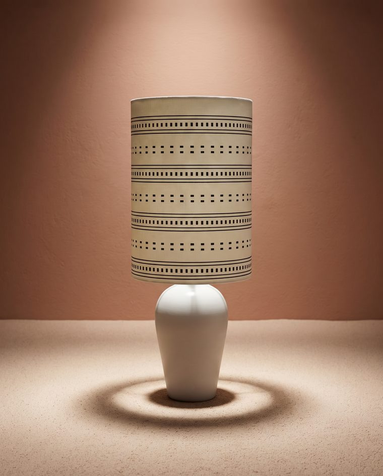
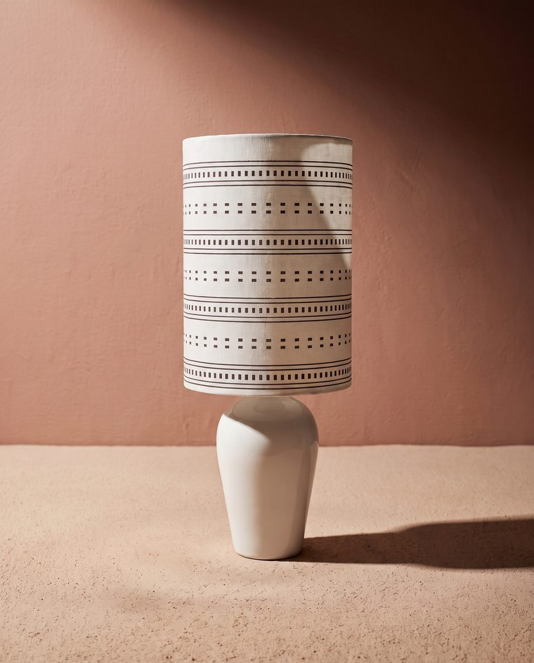

La plus belle vie des objets est parfois la deuxième.
Des lampes chinées puis refaites à la main. Texte provisoire.
Découvrir les lampes


Nouvelles trouvailles

Lampe au pied de grès, abat-jour en raphia
Prix à renseigner

Lampe Canton, abat-jour vert
Prix à renseigner

Fauteuil rotin naturel
Prix à renseigner

Pichet en barbotine aux raisins
Prix à renseigner
Voir toutes les pièces* Chaque pièce part avec un petit mot et un petit bonheur glissés dans le colis.
Le photomaton des objets
Avant de partir, chaque objet passe devant l'objectif
Une planche de quatre vues. L'objet tel qu'il est, avec son état réel et ses imperfections. Texte provisoire.
- 01Le portrait, de face
- 02Le soir, la lampe allumée
- 03La personnalité, sous le projecteur
- 04Le plein jour, ombre portée




Entrer par la pièce


Dans chaque colis
« Allumez-la au crépuscule, avec une tasse à la main. »
Petit bonheur n° 27Le petit bonheur*
Une minuscule photographie ancienne. Un billet fictif. Une phrase sous une étiquette. Un petit secret laissé par quelqu'un, sans autre raison que de vous faire sourire. Texte provisoire.
L'atelier

« Chinées avec amour, faites avec les mains et le cœur. »Bernadette
Elle chine des pieds de lampe et des meubles abîmés. Elle les répare à la main sans effacer les marques du temps. Texte provisoire.
Faire connaissanceLettre
Des nouvelles des objets
Les nouvelles trouvailles et leurs histoires. Une lettre à la fois.